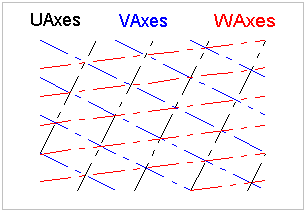
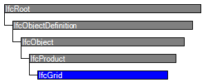
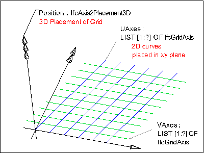

Natural language names
 | Raster |
 | Grid |
 | Grille |
| Raster |
| Grid |
| Grille |
| Item | SPF | XML | Change | Description | IFC2x3 to IFC4 |
|---|---|---|---|---|
| IfcGrid | ||||
| OwnerHistory | MODIFIED | Instantiation changed to OPTIONAL. | ||
| PredefinedType | ADDED |
IfcGrid ia a planar design grid defined in 3D space used as an aid in locating structural and design elements. The position of the grid (ObjectPlacement) is defined by a 3D coordinate system (and thereby the design grid can be used in plan, section or in any position relative to the world coordinate system). The position can be relative to the object placement of other products or grids. The XY plane of the 3D coordinate system is used to place the grid axes, which are 2D curves (for example, line, circle, arc, polyline).
The inherited attributes Name and Description can be used to define a descriptive name of the grid and to indicate the grid's purpose. A grid is defined by (normally) two, or (in case of a triangular grid) three lists of grid axes. The following figures shows some examples.
A grid may support a rectangular layout as shown in Figure 146, a radial layout as shown in Figure 147, or a triangular layout as shown in Figure 148.
NOTE The PredefinedType denotes the type of grid that is represented by IfcGrid. The instantiation of IfcGridAxis's has to agree to the PredefinedType, if provided.
NOTE The grid axes, defined within the design grid, are those elements to which project objects will be placed relatively using the IfcGridPlacement.

|

|
 |
|
Figure 146 — Grid rectangular layout |
Figure 147 — Grid radial layout |
Figure 148 — Grid triangular layout |
HISTORY New entity in IFC1.0.
IFC4 CHANGE The attribute PredefinedType has been added at the end of the attribute list.
Informal Propositions:
NOTE Left side: ambiguous intersections A1 and A2, a grid containing such grid axes is not a valid design grid; Right side: the conflict can be resolved by splitting one grid axis in a way, such as no ambiguous intersections exist. |

Figure 149 — Grid intersections |
| # | Attribute | Type | Cardinality | Description | C |
|---|---|---|---|---|---|
| 8 | UAxes | IfcGridAxis | ~L[1:?] | List of grid axes defining the first row of grid lines. | X |
| 9 | VAxes | IfcGridAxis | ~L[1:?] | List of grid axes defining the second row of grid lines. | X |
| 10 | WAxes | IfcGridAxis | ~L[1:?] | List of grid axes defining the third row of grid lines. It may be given in the case of a triangular grid. | X |
| 11 | PredefinedType | IfcGridTypeEnum | [0:1] | Predefined types to define the particular type of the grid. | X |
| ContainedInStructure | IfcRelContainedInSpatialStructure @RelatedElements | S[0:1] | Relationship to a spatial structure element, to which the grid is primarily associated. | X |
| Rule | Description |
|---|---|
| HasPlacement | The placement for the grid has to be given. |

| # | Attribute | Type | Cardinality | Description | C |
|---|---|---|---|---|---|
| IfcRoot | |||||
| 1 | GlobalId | IfcGloballyUniqueId | [1:1] | Assignment of a globally unique identifier within the entire software world. | X |
| 2 | OwnerHistory | IfcOwnerHistory | [0:1] |
Assignment of the information about the current ownership of that object, including owning actor, application, local identification and information captured about the recent changes of the object,
NOTE only the last modification in stored - either as addition, deletion or modification. | X |
| 3 | Name | IfcLabel | [0:1] | Optional name for use by the participating software systems or users. For some subtypes of IfcRoot the insertion of the Name attribute may be required. This would be enforced by a where rule. | X |
| 4 | Description | IfcText | [0:1] | Optional description, provided for exchanging informative comments. | X |
| IfcObjectDefinition | |||||
| HasAssignments | IfcRelAssigns @RelatedObjects | S[0:?] | Reference to the relationship objects, that assign (by an association relationship) other subtypes of IfcObject to this object instance. Examples are the association to products, processes, controls, resources or groups. | X | |
| Nests | IfcRelNests @RelatedObjects | S[0:1] | References to the decomposition relationship being a nesting. It determines that this object definition is a part within an ordered whole/part decomposition relationship. An object occurrence or type can only be part of a single decomposition (to allow hierarchical strutures only). | X | |
| IsNestedBy | IfcRelNests @RelatingObject | S[0:?] | References to the decomposition relationship being a nesting. It determines that this object definition is the whole within an ordered whole/part decomposition relationship. An object or object type can be nested by several other objects (occurrences or types). | X | |
| HasContext | IfcRelDeclares @RelatedDefinitions | S[0:1] | References to the context providing context information such as project unit or representation context. It should only be asserted for the uppermost non-spatial object. | X | |
| IsDecomposedBy | IfcRelAggregates @RelatingObject | S[0:?] | References to the decomposition relationship being an aggregation. It determines that this object definition is whole within an unordered whole/part decomposition relationship. An object definitions can be aggregated by several other objects (occurrences or parts). | X | |
| Decomposes | IfcRelAggregates @RelatedObjects | S[0:1] | References to the decomposition relationship being an aggregation. It determines that this object definition is a part within an unordered whole/part decomposition relationship. An object definitions can only be part of a single decomposition (to allow hierarchical strutures only). | X | |
| HasAssociations | IfcRelAssociates @RelatedObjects | S[0:?] | Reference to the relationship objects, that associates external references or other resource definitions to the object.. Examples are the association to library, documentation or classification. | X | |
| IfcObject | |||||
| 5 | ObjectType | IfcLabel | [0:1] |
The type denotes a particular type that indicates the object further. The use has to be established at the level of instantiable subtypes. In particular it holds the user defined type, if the enumeration of the attribute PredefinedType is set to USERDEFINED.
| X |
| IsDeclaredBy | IfcRelDefinesByObject @RelatedObjects | S[0:1] | Link to the relationship object pointing to the declaring object that provides the object definitions for this object occurrence. The declaring object has to be part of an object type decomposition. The associated IfcObject, or its subtypes, contains the specific information (as part of a type, or style, definition), that is common to all reflected instances of the declaring IfcObject, or its subtypes. | X | |
| Declares | IfcRelDefinesByObject @RelatingObject | S[0:?] | Link to the relationship object pointing to the reflected object(s) that receives the object definitions. The reflected object has to be part of an object occurrence decomposition. The associated IfcObject, or its subtypes, provides the specific information (as part of a type, or style, definition), that is common to all reflected instances of the declaring IfcObject, or its subtypes. | X | |
| IsTypedBy | IfcRelDefinesByType @RelatedObjects | S[0:1] | Set of relationships to the object type that provides the type definitions for this object occurrence. The then associated IfcTypeObject, or its subtypes, contains the specific information (or type, or style), that is common to all instances of IfcObject, or its subtypes, referring to the same type. | X | |
| IsDefinedBy | IfcRelDefinesByProperties @RelatedObjects | S[0:?] | Set of relationships to property set definitions attached to this object. Those statically or dynamically defined properties contain alphanumeric information content that further defines the object. | X | |
| IfcProduct | |||||
| 6 | ObjectPlacement | IfcObjectPlacement | [0:1] | Placement of the product in space, the placement can either be absolute (relative to the world coordinate system), relative (relative to the object placement of another product), or constraint (e.g. relative to grid axes). It is determined by the various subtypes of IfcObjectPlacement, which includes the axis placement information to determine the transformation for the object coordinate system. | X |
| 7 | Representation | IfcProductRepresentation | [0:1] | Reference to the representations of the product, being either a representation (IfcProductRepresentation) or as a special case a shape representations (IfcProductDefinitionShape). The product definition shape provides for multiple geometric representations of the shape property of the object within the same object coordinate system, defined by the object placement. | X |
| ReferencedBy | IfcRelAssignsToProduct @RelatingProduct | S[0:?] | Reference to the IfcRelAssignsToProduct relationship, by which other products, processes, controls, resources or actors (as subtypes of IfcObjectDefinition) can be related to this product. | X | |
| IfcGrid | |||||
| 8 | UAxes | IfcGridAxis | ~L[1:?] | List of grid axes defining the first row of grid lines. | X |
| 9 | VAxes | IfcGridAxis | ~L[1:?] | List of grid axes defining the second row of grid lines. | X |
| 10 | WAxes | IfcGridAxis | ~L[1:?] | List of grid axes defining the third row of grid lines. It may be given in the case of a triangular grid. | X |
| 11 | PredefinedType | IfcGridTypeEnum | [0:1] | Predefined types to define the particular type of the grid. | X |
| ContainedInStructure | IfcRelContainedInSpatialStructure @RelatedElements | S[0:1] | Relationship to a spatial structure element, to which the grid is primarily associated. | X | |
Product Local Placement
The Product Local Placement concept applies to this entity.
The local placement for IfcGrid is defined in its supertype IfcProduct. It is defined by the IfcLocalPlacement, which defines the local coordinate system that is referenced by all geometric representations.
FootPrint Geometry
The FootPrint Geometry concept applies to this entity as shown in Table 53.
| ||||||
Table 53 — IfcGrid FootPrint Geometry |
The 2D geometric representation of IfcGrid is defined using the 'GeometricCurveSet' geometry. The following attribute values should be inserted
The following constraints apply to the 2D representation:
|
 |
As shown in Figure 31, the IfcGrid defines a placement coordinate system using the ObjectPlacement. The XY plane of the coordinate system is used to place the 2D grid axes. The Representation of IfcGrid is defined using IfcProductRepresentation, referencing an IfcShapeRepresentation, that includes IfcGeometricCurveSet as Items. All grid axes are added as IfcPolyline to the IfcGeometricCurveSet. |
|
Figure 148 — Grid layout |

|
As shown in Figure 32, the attributes UAxes and VAxes define lists of IfcGridAxis within the context of the grid. Each instance of IfcGridAxis refers to the same instance of IfcCurve (here the subtype IfcPolyline) that is contained within the IfcGeometricCurveSet that represents the IfcGrid. |
|
Figure 149 — Grid representation |
| # | Concept | Model View |
|---|---|---|
| IfcRoot | ||
| Software Identity | Common Use Definitions | |
| Revision Control | Common Use Definitions | |
| IfcObject | ||
| Object Occurrence Predefined Type | Common Use Definitions | |
| IfcGrid | ||
| Product Local Placement | Common Use Definitions | |
| FootPrint Geometry | Common Use Definitions | |
<xs:element name="IfcGrid" type="ifc:IfcGrid" substitutionGroup="ifc:IfcProduct" nillable="true"/>
<xs:complexType name="IfcGrid">
<xs:complexContent>
<xs:extension base="ifc:IfcProduct">
<xs:sequence>
<xs:element name="UAxes">
<xs:complexType>
<xs:sequence>
<xs:element ref="ifc:IfcGridAxis" maxOccurs="unbounded"/>
</xs:sequence>
<xs:attribute ref="ifc:itemType" fixed="ifc:IfcGridAxis"/>
<xs:attribute ref="ifc:cType" fixed="list-unique"/>
<xs:attribute ref="ifc:arraySize" use="optional"/>
</xs:complexType>
</xs:element>
<xs:element name="VAxes">
<xs:complexType>
<xs:sequence>
<xs:element ref="ifc:IfcGridAxis" maxOccurs="unbounded"/>
</xs:sequence>
<xs:attribute ref="ifc:itemType" fixed="ifc:IfcGridAxis"/>
<xs:attribute ref="ifc:cType" fixed="list-unique"/>
<xs:attribute ref="ifc:arraySize" use="optional"/>
</xs:complexType>
</xs:element>
<xs:element name="WAxes" nillable="true" minOccurs="0">
<xs:complexType>
<xs:sequence>
<xs:element ref="ifc:IfcGridAxis" maxOccurs="unbounded"/>
</xs:sequence>
<xs:attribute ref="ifc:itemType" fixed="ifc:IfcGridAxis"/>
<xs:attribute ref="ifc:cType" fixed="list-unique"/>
<xs:attribute ref="ifc:arraySize" use="optional"/>
</xs:complexType>
</xs:element>
</xs:sequence>
<xs:attribute name="PredefinedType" type="ifc:IfcGridTypeEnum" use="optional"/>
</xs:extension>
</xs:complexContent>
</xs:complexType>
ENTITY IfcGrid
SUBTYPE OF (IfcProduct);
UAxes : LIST [1:?] OF UNIQUE IfcGridAxis;
VAxes : LIST [1:?] OF UNIQUE IfcGridAxis;
WAxes : OPTIONAL LIST [1:?] OF UNIQUE IfcGridAxis;
PredefinedType : OPTIONAL IfcGridTypeEnum;
INVERSE
ContainedInStructure : SET [0:1] OF IfcRelContainedInSpatialStructure FOR RelatedElements;
WHERE
HasPlacement : EXISTS(SELF\IfcProduct.ObjectPlacement);
END_ENTITY;
 Instance diagram
Instance diagram Link to this page
Link to this page